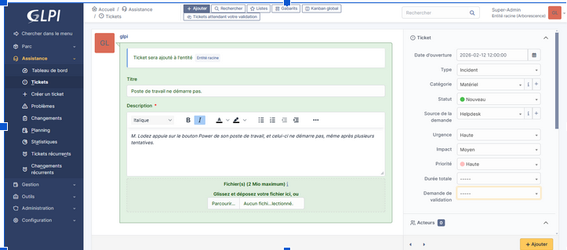
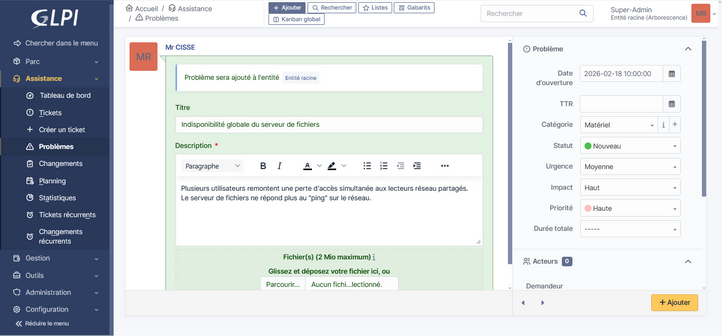

Déploiement d'un Centre de Services IT (GLPI)
Mise en œuvre et administration complète d'une plateforme ITSM open source. L'objectif était d'orchestrer la gestion de parc informatique et le centre d'assistance (Helpdesk) en appliquant les bonnes pratiques du référentiel ITIL v4.
1. Contexte & Objectifs
Un service informatique performant ne se limite pas à la technique pure : il nécessite une gestion structurée des requêtes utilisateurs et des équipements. J'ai déployé GLPI pour centraliser le support technique et démontrer ma capacité à administrer un système d'information orienté services (ITSM). Le but était d'automatiser le cycle de vie des tickets et de garantir la traçabilité des interventions.
2. Déploiement Technique & Méthodologie
Le projet s'est articulé autour de deux axes fondamentaux : l'infrastructure système et l'implémentation logique.
- Infrastructure LAMP : Installation et sécurisation d'un environnement serveur sous Linux. Configuration du serveur web Apache et administration du moteur de base de données relationnelle (SGBD) MariaDB pour héberger les tables de GLPI.
- Gestion des Incidents (ITIL) : Configuration d'une matrice de priorité (Impact x Urgence) pour qualifier les pannes. Création de profils (Techniciens N1/N2, Utilisateurs, Super-Admin) et de flux d'escalade.
- Problèmes & Changements : Mise en place de règles liant les incidents récurrents à des "Problèmes" pour en isoler la cause racine (Known Error Database), et intégration d'un workflow de validation pour les "Changements" d'infrastructure afin d'éviter les régressions.
3. Résultats & Démonstration
La plateforme web est pleinement opérationnelle. Elle permet une interaction dynamique avec la base de données SQL pour suivre l'historique d'un équipement ou l'avancement d'un ticket utilisateur en temps réel.

Traitement des incidents : Interface de qualification d'un ticket avec attribution des niveaux de priorité et d'urgence.

Corrélation ITIL : Liaison d'un incident récurrent à un ticket "Problème" pour analyse de la cause racine.
4. Compétences acquises & Valeur ajoutée
Administration Système et SGBD : Ce déploiement m'a permis de consolider mes compétences sur l'environnement Linux (pile LAMP). J'ai compris qu'un outil de ticketing performant dépend intégralement de la robustesse de son infrastructure web et du schéma relationnel (intégrité des clés) de sa base de données MariaDB.
Maturité Process / Vision Entreprise : La théorie ITIL est souvent abstraite. Configurer la distinction entre une interruption immédiate de service ("Incident") et sa cause profonde ("Problème") m'a donné une maturité essentielle pour intégrer une équipe de production. À l'avenir, j'envisage de coupler cette gestion de parc à des playbooks d'automatisation (Ansible) pour lier le ticketing au déploiement de correctifs réseaux.